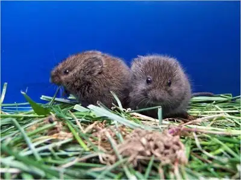

{kind=link}

C.Commons: urban-science.blogspot.com/2008_09_01_archiveAbout halfway through my 12 years of breastfeeding, I became aware of the powerful effects of oxytocin, a hormone largely connected to the procreative capacities of the female, and how it was directing my life.
Not that I minded. In fact, of all the hormones that have affected me through the years, I’d consider oxytocin a favorite. If it were a drug, oxytocin would be my drug of choice.
Oxytocin has many functions, including the ability to cause the uterus to contract, to release breast milk, and to promote effective storage of a mother’s nutrients while also helping digestion. It also calms a mother by lowering her blood pressure and stimulates maternal attachment as well as mothering behaviors and maternal vigilance.
Many times through my nursing years, I had a keen awareness of how breastfeeding was contributing to my emotional health. Knowing more now, I credit oxytocin. I would even go so far as to say that oxytocin was largely responsible for several significant changes in my life: the decision to leave the traditional work force, our relocating to the Midwest, and being open to a larger family.
I’ll explain why I believe this in a little bit. But for now, it’s enough to know my nursing years changed me; or, rather, oxytocin changed me, or, at the very least, encouraged certain behaviors and decisions, several life-changing.
Thanks to Dr. Miriam Grossman, an author I introduced on Friday, I finally have a clearer understanding of why. In reading her second book, You’re Teaching My Children What?, I’ve learned more about this amazing hormone, and as a result, I’ve gained important information that every parent should know; information I’m certain will be crucial to me as I guide my children into and through their teen and young-adult years.
You see, one doesn’t have to be lactating to be affected by oxytocin. Some have referred to oxytocin as “the cuddle hormone.” It’s the reason, according to Grossman, that brain experts advise girls not to let a guy hug them unless they plan to trust him. Why? Because a serious embrace (at least twenty seconds in duration) can fire up the oxytocin production.
Grossman pointed to a study of prairie voles through which it was found that the voles’ propensity for choosing monogamous, lifelong mating is prompted by oxytocin acting on their brains. In contrast, the Montane vole, which has an oxytocin-resistant brain, tends to play the field.
In short, oxytocin promotes social bonds. That’s why I feel those huge decisions I mentioned earlier were influenced in part by my lactating state. Oxytocin was encouraging me to settle in, to tend to my family above all else, to choose domesticity for the sake of my children.
But there are implications here beyond the raising of my brood. Parents listen up: even an act such as kissing is an intimate enough behavior to fuel oxytocin. Furthermore, oxytocin acts powerfully on the reward center, the same area that produces the euphoric effects of drugs like cocaine.
And here’s something related and slightly disconcerting. “While oxytocin is amping up the reward center and fueling attachment,” Grossman says, “it’s slowing things down elsewhere…de-activating the centers that mediate negative judgment, caution and fear.”
According to Grossman, oxytocin turns on attachment while turning off critical thinking. It sends a signal to the brain with the message: Now I’m with someone special. I can relax and trust this person. I can love him or her. And girls are particularly susceptible, because oxytocin works even more powerfully within them.
Grossman explains that after a while a girl’s brain may respond to a guy even without touch, due to the brain having been saturated with oxytocin. “The sight of him in the laundry room or cafeteria may be enough to stir those feelings of attachment.”
Of course, I happen to believe from a faith perspective that all of this is part of God’s design. The scientific evidence is amazing and points to a divine plan. When things happen in the right order, it is all as it should be, as it was meant to be. But if the bonding occurs prematurely, before critical thinking kicks in, the consequences can be devastating.
I don’t need to spell it out. You can let your imaginations go to the possible conclusions. I’m merely a conduit for important information that is not being disseminated in our schools as part of the sex education curriculum. Our children are being told about safer sex and encouraged to use condoms and the pill. They are not being taught so much about biology and how our bodies and brains were designed to work, and how, if we move things out of order or context, our lives can turn onto a regrettable path.
Oxytocin is a wonderful thing. I love oxytocin. It helped me settle into motherhood in a way I might not have otherwise. It kicks in whether you breastfeed or not, but it’s especially powerful in the nursing mother. I lived it, and I have no doubt it influenced my life’s path in a very profound way. It was, indeed, like a drug, natural and pleasant, and even had a healing effect on my life.
But after learning what I have with the help of Grossman, I am thinking more deeply about how this might play out in the lives of my children. I am praying that I can adequately teach them that oxytocin, like all good and helpful things, is meant to be released in a certain season of their lives, and that they will not regret waiting for that season to flower before opening themselves to its powerful effects.
Q4U: Are there other aspects of today’s sex education programs that are being overlooked?